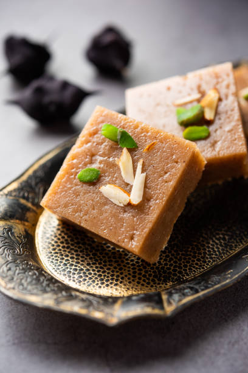

-
Gulab Jamun
-
process
-
Suger
Water
Floor

-
Summary
Gulab jamun is a popular Indian sweet known for its rich, decadent flavor and soft, melt-in-your-mouth texture. It's a beloved dessert enjoyed during festivals, weddings, and celebrations, symbolizing joy and togetherness. The combination of khoya, flour, and a fragrant sugar syrup makes it a delightful treat for those with a sweet tooth, and its versatility in preparation and regional variations contribute to its widespread appeal.
- 
-
Summary
Barfi, a popular Indian sweet, is enjoyed for its rich flavor, diverse varieties, and cultural significance. It's a versatile treat, often made with milk, sugar, and nuts, offering a delightful sweetness and satisfying texture. Beyond its taste, barfi holds a special place in celebrations and traditions, symbolizing joy and auspicious beginnings.